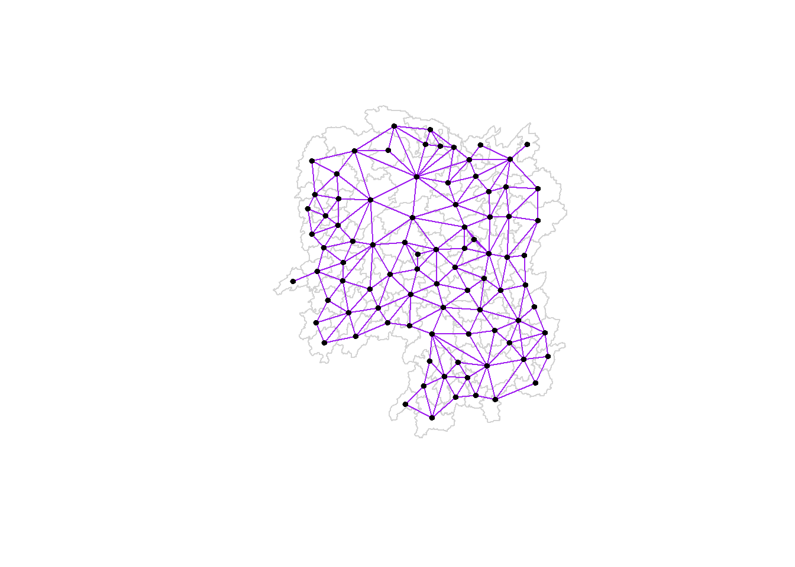
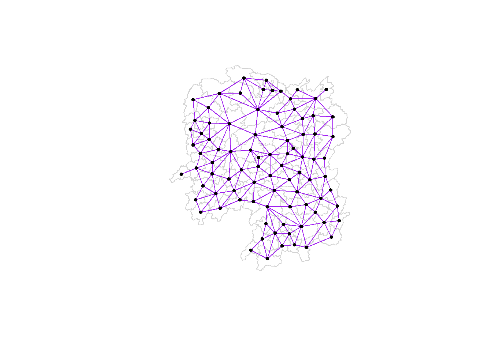
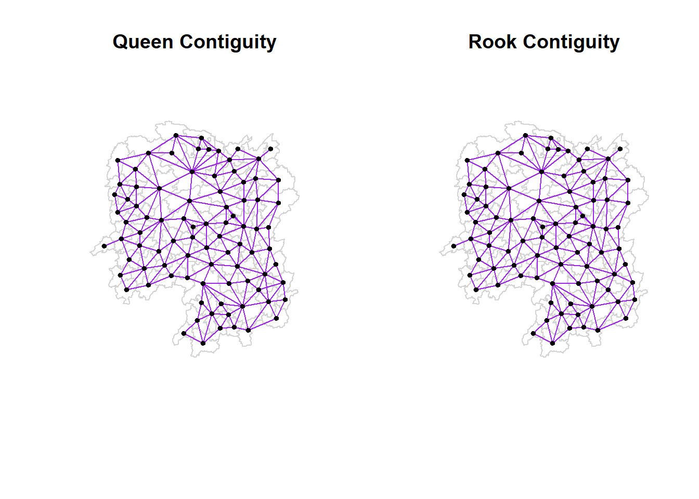

pacman::p_load(sf, spdep, tmap, tidyverse, knitr)
set.seed(123)Hands On Exercise 4- Spatial Weights and Applications
4 Introduction
In this Hands-On Exercise we are going to focus on computing spatial weights using appropriate functions of the spdep package on R.
4.1 Data and Packages
For this exercise, we will be focusing on Hunan. The following data sets will be used:
Hunan county boundary layer. This is a geospatial data set in ESRI shapefile format.
Hunan_2012.csv: This csv file contains selected Hunan’s local development indicators in 2012.
The following packages are used:
sf: Provides simple features support for handling and analyzing spatial vector data in R.spdep: A package for spatial dependence and spatial regression analysis, particularly for handling spatial weights.tmap: A flexible visualization package for thematic maps, supporting both static and interactive mapping in R.tidyverse: A collection of R packages designed for data science, emphasizing data manipulation, visualization, and functional programming.knitr: A dynamic report generation tool in R, allowing for the integration of code, results, and narrative in reproducible documents.
Below, we import these packages into our environment.
4.2 Importing the data
We start of by importing the Hunan shapefile into R using the st_read() function of the sf package.
hunan <- st_read(dsn = "data/geospatial",
layer = "Hunan")Reading layer `Hunan' from data source
`C:\arjxn11\ISSS626-GAA\Hands-on_Ex\Hands-on_Ex04\data\geospatial'
using driver `ESRI Shapefile'
Simple feature collection with 88 features and 7 fields
Geometry type: POLYGON
Dimension: XY
Bounding box: xmin: 108.7831 ymin: 24.6342 xmax: 114.2544 ymax: 30.12812
Geodetic CRS: WGS 84We see that it is a simple feature data-frame with 88 features and 7 fields, projected in the WGS84 coordinate system.
We now import the csv file using the read_csv() function of the readr package.
hunan2012 <- read_csv("data/aspatial/Hunan_2012.csv")This is a simple R data-frame.
4.2.1 Performing relational joins
We will proceed to join this to the simple feature data-frame, hunan, obtained above using a relational join technique.
The left_join() function of the dplyr package is used as shown in the code chunk below.
hunan <- left_join(hunan,hunan2012)%>%
select(1:4, 7, 15)4.3 Visualizing Regional Development Indicators
After successfully completing the relational join, we can now plot a choropleth map to visualize the GDP per capita of Hunan in 2012 using various functions of the tmap package.
basemap <- tm_shape(hunan) +
tm_polygons() +
tm_text("NAME_3", size=0.5)
gdppc <- qtm(hunan, "GDPPC")
tmap_arrange(basemap, gdppc, asp=1, ncol=2)
From the above, we can infer that Changsha has the highest GDP per capita, between 80,000 and 100,000 while several surrounding regions have relatively high GDP per capita as well.
Many regions, especially in the Central, South-West and North-West region of Hunan seem to have a lower GDP per capita.
4.4 Computing Contiguity Spatial Weights
We now implement the poly2nb() function of the spdep package to compute contiguity weight matrices for the study area selected.
Using this function, we are able to build a ‘neighbors list’ based on regions with contiguous boundaries.
In this function, we will pass an argument, ‘queen’, that can be set as either TRUE (default) or FALSE. If the ‘queen’ argument is not explicitly set to FALSE, the function returns a list of first order neighbors using the Queen criteria.
You may refer to the spdep package documentation here to learn more about its functions and arguments.
4.4.1 Computing (QUEEN) contiguity based neighbors
We use the poly2nb() function as shown in the code chunk below. Using this, we are able to compute a Queen contiguity weight matrix.
wm_q <- poly2nb(hunan, queen=TRUE)
summary(wm_q)Neighbour list object:
Number of regions: 88
Number of nonzero links: 448
Percentage nonzero weights: 5.785124
Average number of links: 5.090909
Link number distribution:
1 2 3 4 5 6 7 8 9 11
2 2 12 16 24 14 11 4 2 1
2 least connected regions:
30 65 with 1 link
1 most connected region:
85 with 11 linksFrom the output above, we can infer that there are 88 area units in total in Hunan. The most connected area unit has 11 neighbors. There are two area units with just 1 neighbor, while 24 area units have 5 neighbors.
For each polygon in our polygon object, wm_q lists all neighboring polygons. For example, to see the neighbors for the first polygo in the object.
wm_q[[1]][1] 2 3 4 57 85Polygon 1 has 5 neighbors as shown above. The numbers in the output represent the polygon IDs as stored in the Hunan SpatialPolygonsDataFrame class.
We can retrieve the county name of selected polygon IDs by using the code chunk below. In the below example, we retrieve the county name for the county with Polygon-ID=1.
hunan$County[1][1] "Anxiang"The name of the county with Polygon-ID 1 is Anxiang.
To retrieve the name of the 5 neighboring polygons, the below code chunk is used.
hunan$NAME_3[c(2,3,4,57,85)][1] "Hanshou" "Jinshi" "Li" "Nan" "Taoyuan"We can proceed to retrieve the GDP Per Capita for each of these regions using the code chunk below.
nb1 <- wm_q[[1]]
nb1 <- hunan$GDPPC[nb1]
nb1[1] 20981 34592 24473 21311 22879From the above output, we infer that the GDP Per Capita of the five nearest neighbors based on the Queen method are 20981, 34592, 24473, 21311, and 22879, which happen to be on the lower middle end of the spectrum of GDP Per Capita.
The entire weight matrix can be displayed using the str() function.
str(wm_q)List of 88
$ : int [1:5] 2 3 4 57 85
$ : int [1:5] 1 57 58 78 85
$ : int [1:4] 1 4 5 85
$ : int [1:4] 1 3 5 6
$ : int [1:4] 3 4 6 85
$ : int [1:5] 4 5 69 75 85
$ : int [1:4] 67 71 74 84
$ : int [1:7] 9 46 47 56 78 80 86
$ : int [1:6] 8 66 68 78 84 86
$ : int [1:8] 16 17 19 20 22 70 72 73
$ : int [1:3] 14 17 72
$ : int [1:5] 13 60 61 63 83
$ : int [1:4] 12 15 60 83
$ : int [1:3] 11 15 17
$ : int [1:4] 13 14 17 83
$ : int [1:5] 10 17 22 72 83
$ : int [1:7] 10 11 14 15 16 72 83
$ : int [1:5] 20 22 23 77 83
$ : int [1:6] 10 20 21 73 74 86
$ : int [1:7] 10 18 19 21 22 23 82
$ : int [1:5] 19 20 35 82 86
$ : int [1:5] 10 16 18 20 83
$ : int [1:7] 18 20 38 41 77 79 82
$ : int [1:5] 25 28 31 32 54
$ : int [1:5] 24 28 31 33 81
$ : int [1:4] 27 33 42 81
$ : int [1:3] 26 29 42
$ : int [1:5] 24 25 33 49 54
$ : int [1:3] 27 37 42
$ : int 33
$ : int [1:8] 24 25 32 36 39 40 56 81
$ : int [1:8] 24 31 50 54 55 56 75 85
$ : int [1:5] 25 26 28 30 81
$ : int [1:3] 36 45 80
$ : int [1:6] 21 41 47 80 82 86
$ : int [1:6] 31 34 40 45 56 80
$ : int [1:4] 29 42 43 44
$ : int [1:4] 23 44 77 79
$ : int [1:5] 31 40 42 43 81
$ : int [1:6] 31 36 39 43 45 79
$ : int [1:6] 23 35 45 79 80 82
$ : int [1:7] 26 27 29 37 39 43 81
$ : int [1:6] 37 39 40 42 44 79
$ : int [1:4] 37 38 43 79
$ : int [1:6] 34 36 40 41 79 80
$ : int [1:3] 8 47 86
$ : int [1:5] 8 35 46 80 86
$ : int [1:5] 50 51 52 53 55
$ : int [1:4] 28 51 52 54
$ : int [1:5] 32 48 52 54 55
$ : int [1:3] 48 49 52
$ : int [1:5] 48 49 50 51 54
$ : int [1:3] 48 55 75
$ : int [1:6] 24 28 32 49 50 52
$ : int [1:5] 32 48 50 53 75
$ : int [1:7] 8 31 32 36 78 80 85
$ : int [1:6] 1 2 58 64 76 85
$ : int [1:5] 2 57 68 76 78
$ : int [1:4] 60 61 87 88
$ : int [1:4] 12 13 59 61
$ : int [1:7] 12 59 60 62 63 77 87
$ : int [1:3] 61 77 87
$ : int [1:4] 12 61 77 83
$ : int [1:2] 57 76
$ : int 76
$ : int [1:5] 9 67 68 76 84
$ : int [1:4] 7 66 76 84
$ : int [1:5] 9 58 66 76 78
$ : int [1:3] 6 75 85
$ : int [1:3] 10 72 73
$ : int [1:3] 7 73 74
$ : int [1:5] 10 11 16 17 70
$ : int [1:5] 10 19 70 71 74
$ : int [1:6] 7 19 71 73 84 86
$ : int [1:6] 6 32 53 55 69 85
$ : int [1:7] 57 58 64 65 66 67 68
$ : int [1:7] 18 23 38 61 62 63 83
$ : int [1:7] 2 8 9 56 58 68 85
$ : int [1:7] 23 38 40 41 43 44 45
$ : int [1:8] 8 34 35 36 41 45 47 56
$ : int [1:6] 25 26 31 33 39 42
$ : int [1:5] 20 21 23 35 41
$ : int [1:9] 12 13 15 16 17 18 22 63 77
$ : int [1:6] 7 9 66 67 74 86
$ : int [1:11] 1 2 3 5 6 32 56 57 69 75 ...
$ : int [1:9] 8 9 19 21 35 46 47 74 84
$ : int [1:4] 59 61 62 88
$ : int [1:2] 59 87
- attr(*, "class")= chr "nb"
- attr(*, "region.id")= chr [1:88] "1" "2" "3" "4" ...
- attr(*, "call")= language poly2nb(pl = hunan, queen = TRUE)
- attr(*, "type")= chr "queen"
- attr(*, "sym")= logi TRUEDo note that sometimes the output of the str() function may be very long. Save the trees if you are going to print out the report.
4.4.2 Creating (ROOK) contiguity based neighbors
The below code chunk helps us compute the Rook contiguity weight matrix.
wm_r <- poly2nb(hunan, queen=FALSE)
summary(wm_r)Neighbour list object:
Number of regions: 88
Number of nonzero links: 440
Percentage nonzero weights: 5.681818
Average number of links: 5
Link number distribution:
1 2 3 4 5 6 7 8 9 10
2 2 12 20 21 14 11 3 2 1
2 least connected regions:
30 65 with 1 link
1 most connected region:
85 with 10 linksThe most connected area unit has 10 neighbors. 5 neighbors are most commonly seen, similar to the Queen method.
4.4.3 Visualizing contiguity weights
A connectivity graph takes a point and displays a line to each neighboring point. We are working with polygons in this situation, so we need to ensure that our points are in order to produce our connectivity graphs.
Usually, the method of choice will be polygon centroids. We calculate using the sf package before moving onto the graphs. Getting latitude and longitude of the Polygon Centroids.
We need points to associate with each polygon before we can make our connectivity graph. It won’t be as simple as applying the st_centroid() function of the sf sf object: us.bound. We need the coordinates in a separate data-frame for this to work.
To do this, we will use a mapping function which will apply a given function to each element of a vector and returns a vector of the same length. Our input vector will be the geometry column of us.bound.
The function that we implement in this situation will be st_centroid().
We will be using the map_dbl variation of map from the purrr package.
4.4.3.1 Longitude and Latitude values
To obtain our longitude values, we map the st_centroid function over the geometry column of us.bound and access the longitude value through the double bracket notation [[]] and 1. This allows us to extract the longitude value, the first value in each centroid.
longitude <- map_dbl(hunan$geometry, ~st_centroid(.x)[[1]])We proceed to do the same method to extract latitude values, with one key difference. We access the second value in each centroid using [[2]] instead of [[1]] like we did when obtaining the longitude values.
latitude <- map_dbl(hunan$geometry, ~st_centroid(.x)[[2]])Now that we have the latitude and longitude values, we can use the cbind() function to put the longitude and latitude values into the same object, coords.
coords <- cbind(longitude, latitude)We use the head() function to verify if coords is in the correct format.
head(coords) longitude latitude
[1,] 112.1531 29.44362
[2,] 112.0372 28.86489
[3,] 111.8917 29.47107
[4,] 111.7031 29.74499
[5,] 111.6138 29.49258
[6,] 111.0341 29.798634.4.3.2 Plotting Queen and Rook Contiguity Based Neighbors Map
We use the plot() function as shown in the code chunk below to plot the map.
plot(hunan$geometry, border="lightgrey")
plot(wm_q, coords, pch = 19, cex = 0.6, add = TRUE, col= "purple")
plot(hunan$geometry, border="lightgrey")
plot(wm_r, coords, pch = 19, cex = 0.6, add = TRUE, col = "purple")
We can plot both side by side to compare the two methods using the code chunk below.
par(mfrow=c(1,2))
plot(hunan$geometry, border="lightgrey", main="Queen Contiguity")
plot(wm_q, coords, pch = 19, cex = 0.6, add = TRUE, col= "purple")
plot(hunan$geometry, border="lightgrey", main="Rook Contiguity")
plot(wm_r, coords, pch = 19, cex = 0.6, add = TRUE, col = "purple")
Queen Contiguity: In this plot, points are connected if they share either an edge or a vertex. This results in more connections, including diagonal ones, creating a denser network.
Rook Contiguity: In this plot, points are only connected if they share an edge, not a vertex. This results in a grid-like pattern without diagonal connections, making the network less dense compared to Queen Contiguity.